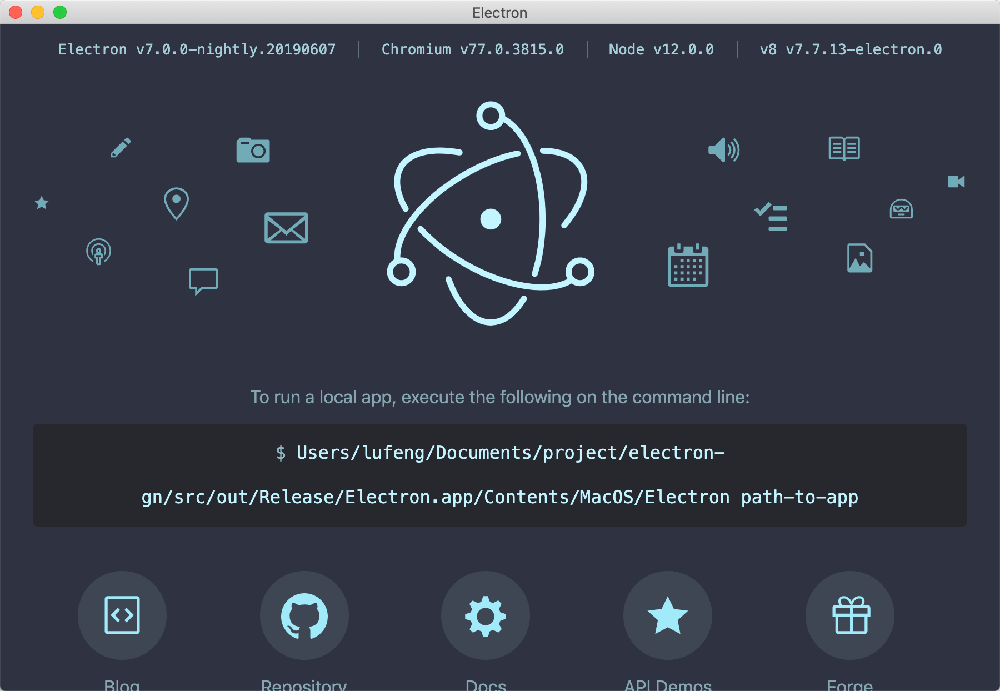

背景
起因是产品的需求，需要更换Electron为底层平台，但因为会有不少定制化的功能要实现，必须自己实现此类内容，所以也就导致必须自己编译Electron的源代码。
整个构建过程，看Electron的构建文档就行了：https://github.com/electron/i18n/blob/master/content/zh-CN/docs/development/build-instructions-gn.md
不过在构建Electron的过程中，出现了很多问题。
一、拉取不了chromium代码。
这个问题大家都懂的，需要翻墙才拉得了代码。这里需要注意了，整个构建代码大约有20几G，得留意工具的套餐有没有这么多流量。
另外，一般来讲我们是用终端命令行拉代码，然而终端的请求是不会经过翻墙工具的，所以需要设代理。
例如我的小飞机是这么设的：
export http_proxy=http://127.0.0.1:1087;
export https_proxy=http://127.0.0.1:1087;二、拉了好久都没拉完。
一开始我是在宿舍拉代码的，但用了一天一夜，都还没有拉完，而终端的日志也让人奔溃。
[7:52:44] Still working on:
[7:52:44] src后来感觉是因为宿舍的网速太慢，于是到公司去拉，约4个半小时就拉好！
[4:20:04] Still working on:
[4:20:04] src/v8
Syncing projects: 100% (95/95), done.所以，网速很重要！！！
三、拉不下来，报错了。
在公司拉代码时，第一次遇到报错，拉取失败。
[1:30:24] error: RPC failed; curl 18 transfer closed with outstanding read data remaining
[1:30:24] fatal: The remote end hung up unexpectedly
[1:30:24] fatal: early EOF
[1:30:24] fatal: index-pack failed查询资料说是git的 http.postBuffer 这个参数太小，会导致大文件拉不下来。
于是设置了：
git config --global http.postBuffer 999M这么设置后，就正常拉完了！！！也就是第二次成功了。
四、还是拉不下来。
磁盘空间不足，也会导致代码拉取失败的！
整体代码拉下来，大概是30几G，另外编译代码生成的中间代码也会有30几G，所以要保证当前磁盘空间至少有70多G（一般128G的Mac就不用想编译这东西了）。
五、编译出错。
__main__.SdkError: 'Install Xcode, launch it, accept the license agreement, and run `sudo xcode-select -s /path/to/Xcode.app` to continue.'这个错误，其实它说得很清楚，按提示处理就行。
sudo xcode-select -s /Applications/Xcode.app总结
在整个构建过程中，问题主要是拉取代码和编译两方面。拉取代码保证网速、稍大的磁盘容量和Git http.postBuffer参数基本就没什么问题，而编译过程中的问题，按错误日志处理也就可以解决！
